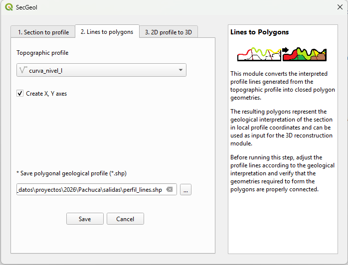
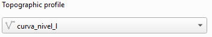
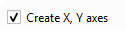

Phase 2. General view of the tool

Selection of the interpreted profile
In this phase, the profile obtained during the Phase 1 is used, once the geological interpretation has been completed using lines.

SecGeol utilizes these lines to delimit the different interpreted units and generate a new profile composed of polygons.
Reference axes

Optionally, the generation of an additional reference axes layer can be enabled. This output is identified by the suffix _ejes.
The layer contains divisions expressed in metres along the profile axes and can be used as a reference for interpreting the distances and elevations represented in the section.
Output geological polygon profile
As a result of the process, SecGeol generates a geological profile composed of polygons representing the units defined during the interpretation.
Polygons that are in contact with the topographic profile retain the geological information incorporated during Phase 1, when available.
Polygons interpreted at depth that are not in contact with the topographic profile are generated without an assigned geological unit. These values can be added later by editing the attribute table of the resulting layer.